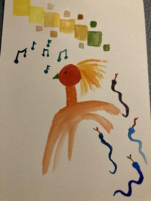

Herr Hempel und das Maldiktat
Ein paar Tage nach der Blognacht stöbere ich durch verschiedenen Sommerblogparaden. Und finde den Aufruf von Susanne Burzel: Erinnerung an eine Lehrkraft, die mich (oder mein Kind) besonders gefördert hat
Der Impuls der Blognacht war "Vorbilder" und entstanden ist eine Geschichte über meinen Kunstlehrer. Hätte ich diese Geschichte nicht schon geschrieben, dann wäre sie jetzt für diese Blogparade entstanden. Und so traue ich mich sie hier noch einmal zu teilen.
Plötzlich sitze ich im Kunstraum in der Grundschule. Ich habe mich mit der Schule schwer getan. So lange ruhig sitzen, zuhören, Dinge nach genauen Vorgaben machen – war so gar nicht mein Ding. Und dann kam der Kunstunterricht und Herr Hempel. Malen, Zeichnen, Basteln alles Dinge die ich gerne machte. Aber in der Schule – kann das gehen? Mit gemischten Gefühlen saß ich da und wartete. „So jetzt machen wir ein Maldiktat!“ Na super wieder so eine doofe Vorgabe.
„Holt euch Wasser und Pinsel und macht den Wasserkasten auf. Hier hat jeder ein großes Blatt. Das Blatt legt ihr mit der kurzen Seite zu euch.“ Pinsel in der Hand warte ich was nun kommt. „Jetzt nehmt ihr Rot und malt einen großen Punkt in die Mitte des Blattes.“ Fünfzehn Kinder plätschern mit dem Pinsel im Wasser und dann in den roten Farbtopf. „So, spült den Pinsel aus und nehmt Blau. Damit malt ihr eine Schlange rechts aufs Blatt.“ Ich schau zu Maria – sie malt die Schlange ganz oben hin. Neben mir sitzt Markus – der malt in die Mitte. Ich male die Schlange unten ums Eck. Komisch, wir haben die gleiche Aufgabe und machen es jeder anders. „Und noch mal den Pinsel ausspülen und Gelb nehmen. Damit malt ihr oben links ein Quadrat.“
So und jetzt? „Jetzt habt ihr Zeit aus dem Bild zu machen was ihr wollt. Ihr könnt das Blatt drehen. Auch andere Stifte nehmen, bei Wasserfarbe bleiben. Wozu ihr Lust habt.“
Wie cool ist das denn. Wir dürfen jetzt machen wozu wir Lust haben? In der Schule?
Herr Hempel hat mir beigebracht, dass es trotz Vorgaben nicht einen festen Weg gibt. Jedes Kind hatte am Ende ein völlig anders Bild, obwohl wir von der gleichen Stelle gestartet sind. Jedes Bild einzigartig und besonders. Es gab zaghafte Bilder in denen die Formen nicht berührt worden. Wilde Bilder mit ineinander laufenden Farben. Fabelfiguren und vieles mehr. Als wir alle fertig waren durfte jeder eine Geschichte zu seinem Bild erzählen.
{kind=link}

Beispiel eines Maldiktats
Ich sitze hier und lächle. Irgendwie war das damals die erste „Blognacht“ in meinem Leben: Ein Impuls, jeder durfte daraus etwas machen und dann gab es dazu noch eine Geschichte hinter dem Impuls.
Wie ich dies so aufschreibe wird mir klar, dass Herr Hempel noch etwas anders in mir geprägt hat. Er hat all unsere Werke geschätzt und unsere Phantasie gelobt. Es gab keine Bewertung in gut oder schlecht. Er war der erste Lehrer der mir das Gefühl gegeben hat, dass ich okay bin so wie ich bin.
Wenn ich heute auf meine Arbeit mit den Patienten schaue, dann mache ich genau das. Ich wertschätze was da ist, ermutige und versuche die Fähigkeiten der Patienten in die Therapie zu integrieren. Und vor allem zu vermitteln, dass er okay ist wie er ist.
Mir war bis ich es jetzt aufgeschrieben habe gar nicht so bewusst, wie sehr mich dieser Kunstunterricht geprägt hat.
Danke Herr Hempel!
Kommentare